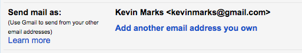
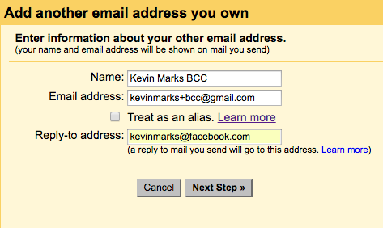
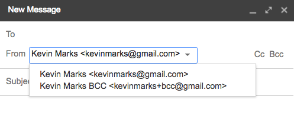
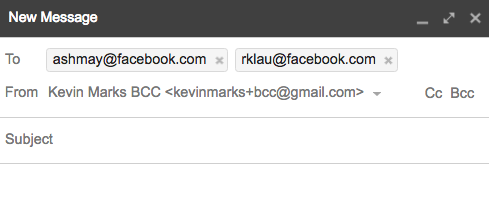

Instant BCC
Today, Ashley had a problem:
The only innovation I want is to be able to start an email thread and bcc myself out of it at the same time.
— Ashley Mayer (@ashleymayer) April 22, 2016
Now, it would be possible to build a little app to do this easily enough; email can be sent from a 'do not reply' type address, with you BCC'd, but Ashley wants this in her email client, which is gmail. Fortunately there is a way:
- Go to the Settings > Accounts and Import page
- In the 'Send Mail as:' section, click 'Add another email address you own' 
- In the popup, put BCC after your name and +bcc after your email address
- uncheck 'Treat as an alias'
- set the Reply-to address to one that blackholes messages (I used that facebook one) 
- click 'Next Step' and you're done.
Now, when you want to send a BCC mail:
- Click Compose as usual.
- Choose the BCC address from the pop-down 
- Address people as usual, and send 